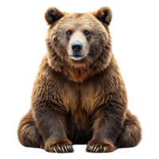

Oso
Oso (Ursidae)

Hábitat:Bosques y montañas.
Estilo de vida:son depredadoras/carnívoros una parte herbivoro.
Características:
- Tienen una cabeza de gran tamaño con orejas pequeñas redondeadas y erectas.
- Tienen patas grandes fuertes y poderosas y un cuerpo mas peasado.
- Tienen un peso de 54 kg y poseen una gran fuerza física.
- Tienen defectuoso su sentido de la vista y el oído sin embargo su olfato es magnifico.
- Su invernacion les permite permanecer semi-dormidos durante la época del año en donde el climas es desfavorable.
Volver a la pagina principal
pagina principal